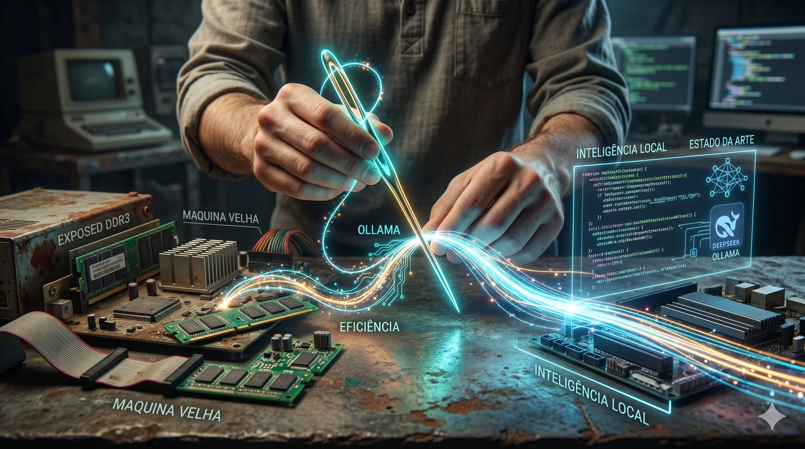

A Era da IA "Costurada": possibilidades e limites da IA local

A conversa sobre inteligência artificial costuma destacar chips caros e grandes centros de dados. Em abril de 2026, este artigo propunha olhar também para a eficiência: como costurar modelos e software ao equipamento disponível, sem confundir essa possibilidade com garantia de resultado em qualquer máquina.
Uma empresa pode testar algumas tarefas localmente antes de comprar uma estação de trabalho. Gerar código, imagens e automações, porém, são trabalhos diferentes: cada um exige modelos, recursos e avaliações próprias.
1. O Efeito DeepSeek: eficiência também importa
O relatório do DeepSeek-V3, publicado em dezembro de 2024, descreveu otimizações de modelo, software e hardware. O cálculo apresentado para etapas específicas do treinamento exclui pesquisas e experimentos anteriores; não representa o custo total da empresa nem prova uma fração comparável do custo total de concorrentes.
A lição não é que o algoritmo dispensa o silício. É que a combinação de modelo, software e hardware importa — e que treinamento de um modelo grande não é a mesma coisa que executar uma versão adequada a um computador local.
2. Ollama e a "costura" digital
O Ollama permite executar modelos de linguagem localmente. A quantização pode reduzir o uso de memória e facilitar a execução, com possível perda de precisão. Modelo, tarefa, memória RAM, GPU e tamanho do contexto influenciam o resultado.
Uma máquina mais antiga pode servir para algumas tarefas; para outras, pode não ter memória ou velocidade suficientes. Não há aqui uma medição que permita prometer desempenho equivalente ao GPT-4 ou uma quantidade fixa de palavras por segundo.
A execução local pode evitar cobrança por token de um serviço externo, mas hardware, energia e manutenção continuam tendo custo. E privacidade depende da configuração: downloads, integrações, telemetria, sincronização e backups também precisam ser examinados.
3. Um exemplo de modernização: do backend ao JavaFX
A reflexão original usava a modernização de um PDV legado como exemplo: uma tela poderia informar o endereço do serviço e o tipo de base em uso, ajudando o operador a entender o ambiente. Um endereço como 127.0.0.1:8765 é apenas ilustrativo.
Esse recorte descreve uma ideia de engenharia de contexto, não comprova que o PDV atualmente distribuído tenha essa interface ou que a IA tenha executado a modernização sozinha. Cada versão precisa ser conferida em sua própria documentação e em seus testes.
4. O ciclo de confiança: automação e QA
Em um projeto desse tipo, um roteiro de testes pode verificar se a tela comunica o estado do sistema, se o primeiro acesso exige a troca de senha quando prevista e se o logout encerra a sessão.
Encerrar a sessão não significa eliminar todos os rastros: registros e arquivos podem permanecer. Revisão humana, testes e inspeção das conexões são necessários antes de afirmar que uma aplicação funciona sem serviços externos.
5. Custo-benefício: uma comparação em 3 anos
Considere apenas como exemplo uma GPU de R$ 3.000 e um serviço de US$ 20 por mês. Em 36 meses, a assinatura somaria US$ 720. Para comparar com a placa, é preciso escolher o câmbio e considerar energia, manutenção, eventual valor residual e as capacidades diferentes de cada opção.
Na nuvem: a empresa contrata um serviço e deve avaliar quais dados são enviados, como são tratados e quais recursos recebe.
No local: o hardware permanece com a empresa e pode ter outros usos. Isso reduz a necessidade de enviar dados para um serviço externo somente quando a configuração e as integrações forem verificadas para a tarefa em questão.
Conclusão: a IA é sobre escolhas
A comparação com energia continua útil: é possível contratar um serviço, usar recursos próprios ou combinar os dois. A melhor escolha depende do trabalho, do custo e do cuidado com os dados.
A máquina que já existe pode costurar algumas soluções. O convite é escolher uma tarefa pequena, testar a qualidade e medir a conta antes de ampliar o uso.
Leitura relacionada: A ressaca da IA em 2026 e a cobrança por retorno.
Gostou dessa reflexão? Como você tem equilibrado o uso de IAs na nuvem versus local na sua empresa? Vamos debater nos comentários!
Tags: IA, Ollama, DeepSeek, Java, Python, hardware, privacidade, desenvolvimento de software, open source.